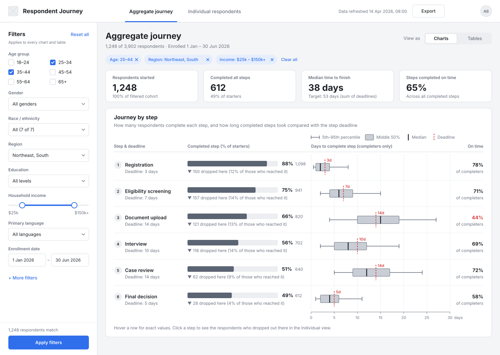
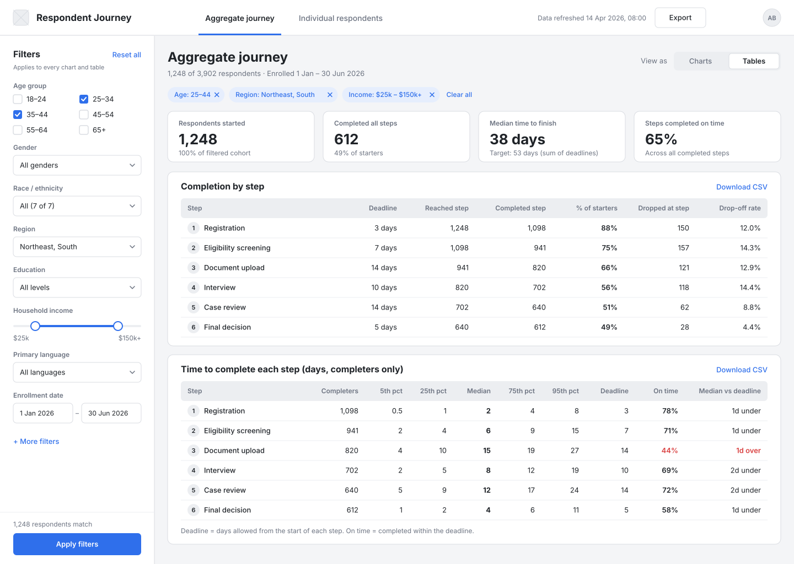
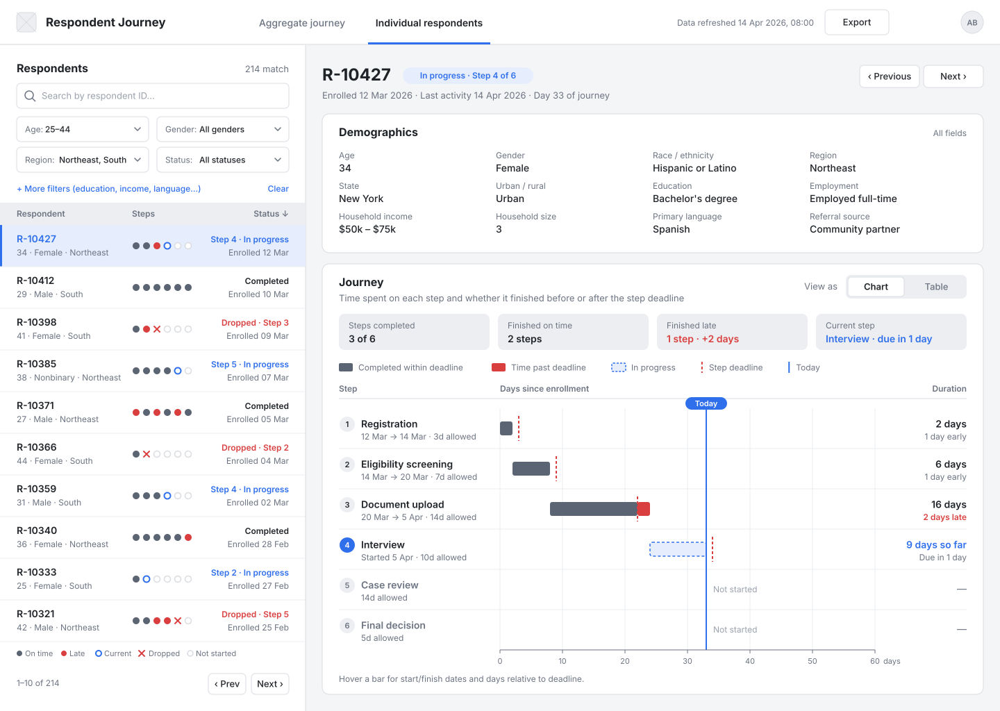
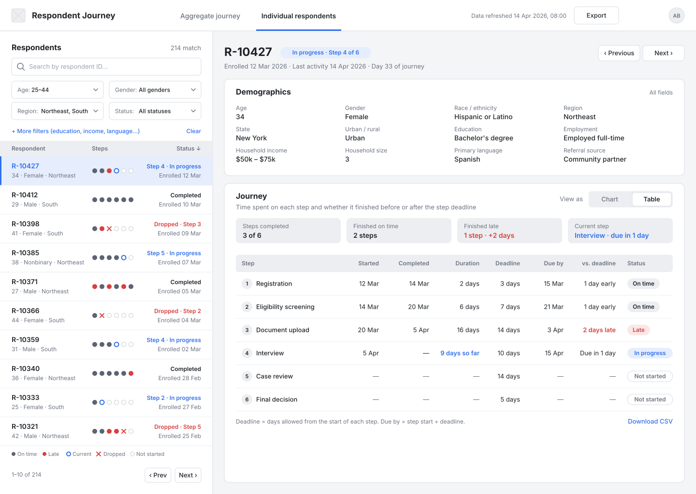

Respondent Journey Dashboard: wireframes
Two screens (aggregate and individual), each shown in its chart and table state. Drag the SVGs in svg/ into Figma to edit them.
1a · Aggregate journey (charts)
Demographic filters on the left. Each step row shows the completion funnel, a box plot of time to complete, the step deadline as a red dashed line, and the share completed on time.

1b · Aggregate journey (tables)
The same data shown as a completion table and a duration-percentile table after switching the toggle to "Tables".

2a · Individual respondent (chart)
Filter and pick a respondent on the left. The detail panel shows all demographics and a timeline of each step against its deadline.

2b · Individual respondent (table)
The journey card switched to the table state.
